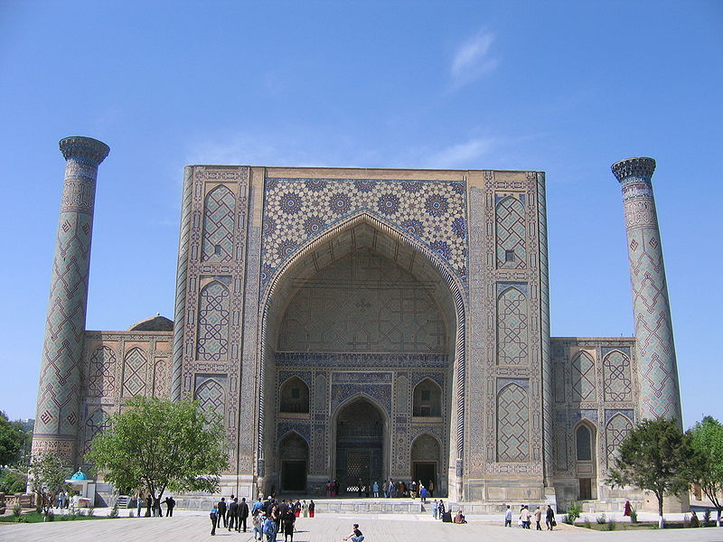
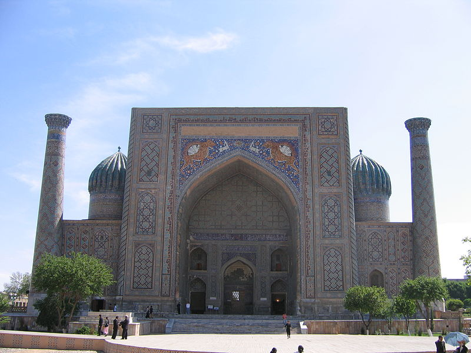
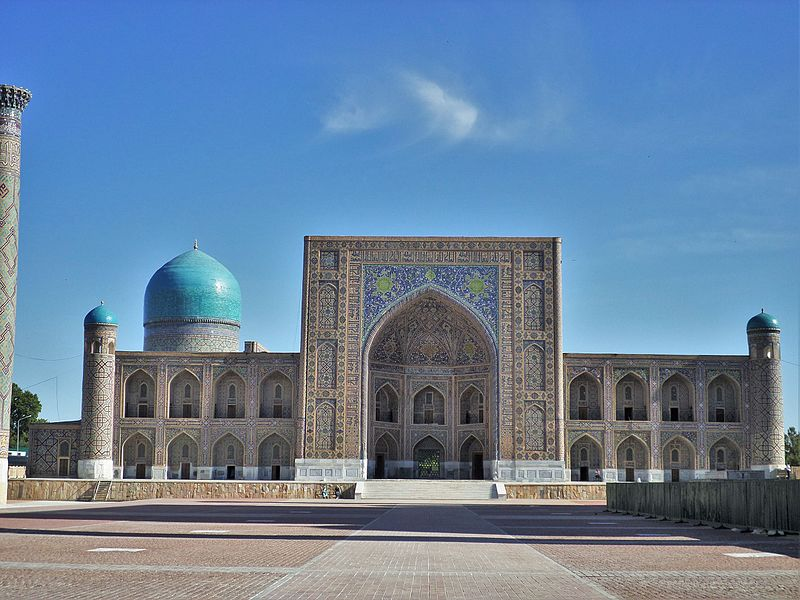

<!DOCTYPE html>
<html lang="en">
  <head>
    <meta charset="UTF-8" />
    <meta http-equiv="X-UA-Compatible" content="IE=edge" />
    <meta name="viewport" content="width=device-width, initial-scale=1.0" />
    <title>Document</title>

    <!-- CSS only -->
    <link rel="stylesheet" href="samarkand.css" />
    <link
    href="https://cdn.jsdelivr.net/npm/bootstrap@5.1.3/dist/css/bootstrap.min.css"
    rel="stylesheet"
    integrity="sha384-1BmE4kWBq78iYhFldvKuhfTAU6auU8tT94WrHftjDbrCEXSU1oBoqyl2QvZ6jIW3"
    crossorigin="anonymous"
  </head>
</html>
<body>
  <!-- Navbar -->
  <nav class="navbar navbar-expand bg-dark navbar-dark py-3 navbar-fixed-top" 
    <div class="container"> 
      <a href="bukhara.html" class="navbar-brand col-mm-4">Bukhara</a>
      <a href="khiva.html" class="navbar-brand col-mm-4">Khiva</a>
      <a href="gallery.html" class="navbar-brand col-mm-4">Gallery</a>
      <a href="index.html" class="navbar-brand col-mm-4">Home</a>
      
      <nav class="navbar navbar-dark bg-dark">
        <div class="container">
          <a class="navbar-brand"></a>
          <form class="d-flex">
            <input class="form-control me-2" type="search" placeholder="Search" aria-label="Search">
            <button class="btn btn-danger" type="submit">Search</button>
          </form>
        </div>
      </nav>
    <button 
    class="navbar-toggler"
  type="button" 
  data-bs-toggle="collapse" 
  data-bs-target="#navmenu"
  aria-expanded="true">
<span class="navbar-toggler-icon"></span>
</button>
<div class="collapse navbar-collapse" id="navmenu">
  <ul class="navbar-nav ms-auto">
    <li class="nav-item">
      <a class="nav-link" href="#" >Questions</a>
    </li>
    <li class="nav-item">
      <a class="nav-link" href="#" >Instructions</a>
    </li>
  </ul>
</div>
</div>
</nav>

<!-- Uzbekistan -->
<div class="container-fluid p-5 bg-danger text-white text-center <i class="fa fa-align-justify" aria-hidden="true"></i">
  <h1><strong>Samarkand</strong></h1>
  <h5>About 3 madarasahs in Registan square</h5>
</div>

<div class="container mt-4">
  <div class="row">
    <div class="col-sm-4">
      <h3>Ulug'bek Madrasah</h3>
      <h5>(1417–1420)</h5>
      <p>
        The Ulug'Bek Madrasa, built by UlughBeg during the Timurid Empire era of Timur—Tamerlane, has an imposing iwan with a lancet-arch pishtaq or portal facing the square. The corners are flanked by high minarets. The mosaic panel over the iwan's entrance arch is decorated by geometrical stylized ornaments.
      </p>
      <div class="images">
        
      </div>
    </div>
    <div class="col-sm-4">
      <h3>Sherdor Madrasah</h3>
      <h5>(1619–1636)</h5>
      <p>
        In the 17th century the ruler of Samarkand, Yalangtush Bakhodur, ordered the construction of the Sher-Dor (Persian: شیردار) and Tillya-Kori (Persian: طلاکاری) madrasahs. The tiger mosaics with a rising sun on their back are especially interesting for their depiction of living beings and use of Persian motifs.
      </p>
      <div class="images">
      
    </div>
    </div>
    <div class="col-sm-4">
      <h3>Tilla Qori Madrasah</h3>
      <h5>(1646–1660)</h5>
      <p>
        Ten years later the Tilya-Kori (Persian: طلاکاری, meaning "Gilded") Madrasah was built. It was not only a residential college for students, but also played the role of grand masjid (mosque). It has a two-storied main facade and a vast courtyard fringed by dormitory cells, with four galleries along the axes.
      </p>
    
      <div class="images">
      

    </div>
    </div>
    </div>
  </div>
</div>
</div>

<div class="container-fluid p-2 bg-danger text-white text-center <i class="fa fa-align-justify" aria-hidden="true"></i">
<h3>Want to know more about Samarkand?</h3>
</div>

<div class="card">
  <div class="row no-gutters">
    <div class="col-mm-4">
      <div class="img-uzb"
    
    <div class="col">
      <div class="card-block px-2">
      </div>
        <p class="card-text">Mausoleum of Shaybanids
          To the east of the Tilya-Kori Madrasah, the mausoleum of Shaybanids (16th century) is located (see picture). The real founder of Shaybanid power was Muhammad Shaybani - grandson of Abu'l-Khayr Khan. In 1500, with the backing of the Chaghataite Khanate, then based in Tashkent, Muhammad Shaybani conquered Samarkand and Bukhara from their last Timurid rulers. The founder of the dynasty then turned on his benefactors and in 1503 took Tashkent. He captured Khiva in 1506 and in 1507 he swooped down on Merv (Turkmenistan), eastern Persia, and western Afghanistan. The Shaybanids stopped the advance of the Safavids, who in 1502 had defeated the Akkoyunlu (Azerbaijan). Muhammad Shaybani was a leader of nomadic Uzbeks. During the ensuing years they substantially settled down in oases of Central Asia. The Uzbek invasion of the 15th Century CE was the last component of today's Uzbek nation ethnogeny.</p>
        <a href="#" class="btn btn-danger">Go Up</a>
    </div>
</div>
</div>
</div>
</div>
<nav class="navbar navbar-expand bg-dark navbar-dark py-1 navbar-fixed-bottom" 
<div class="container"> 
  <footer>
  <p id="copyright" class="copyright text">Copyright &copy; Nuradil</p>
</footer>
<button>❤Like</button>
</div>
</nav>
</body>
</html>